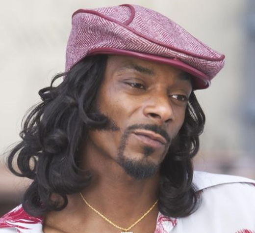
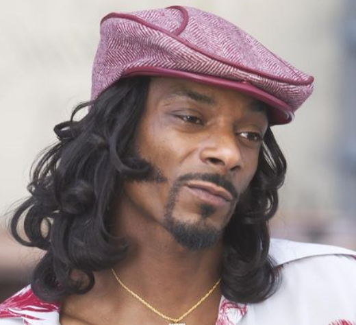

Dicas e Truques
De quem sabe muito sobre cabelos crespos
7 passos para se apaixonar pelo seu cabelo crespo natural
Sabemos que a jornada para a aceitação do cabelo crespo natural é longa e nada fácil de trilhar.
Afinal, é difícil se libertar das amarras e aprender a se amar depois de anos vivendo em uma sociedade preconceituosa que reprime as características mais comuns do ser humano, como a textura do seu cabelo.
Se você está disposta a se aventurar nesse caminho de autoconhecimento e aceitação, vem com a gente! E um segredo: não precisa ter medo!

1. Olhe para o espelho e toque no seu cabelo
Olhando para o espelho, toque no seu cabelo com carinho, veja como é macio, totalmente diferente do que a sociedade fez você acreditar por toda a sua vida.
Afinal, não é porque a sua textura é diferente do liso, que ele é duro, feio… Toque nele sem julgamentos e você vai sentir. Vai perceber que essa textura inclusive é incrível para penteados.
Você já viu quanto penteados incríveis dá para fazer com o seu cabelo crespo?
E o volume, então!? De invejar… É lindo e cheio de poder. É como coroa que nasceu com você.
@2x.png)
2. Tenha referências
Que tal parar de tentar se encaixar em padrões menores que você?
O que a sociedade diz que é bonito, não importa, você é maior do que isso.
As pessoas são diferentes e essa é a beleza da vida.
Já pensou que chato todo mundo igual?
Procure se inspirar em pessoas semelhantes.
Com o corpo parecido, tom de pele similar e um cabelo crespo, como o seu…
Mas não igual ao seu, porque você é única.
Se inspire nessas pessoas, pessoas que você admira, mas não se esqueça de que você é tão incrível quanto elas, do jeitinho que você é.

3. Seja amável com seus detalhes
Sabe aquele frizz que você tenta esconder?
E aquele volume que você tenta abaixar?
Quem disse que eles são feios?
E quem são “eles” para dizer o que quer que seja?
O seu volume, o seu frizz, são parte de você.
Use-os ao seu favor, tente enxergar cada detalhe do seu cabelo com carinho.
@2x.png)
4. Ignore as opiniões alheias
Ouvir a opinião dos outros, principalmente as negativas, nunca levou ninguém a lugar nenhum.
A sociedade é cruel e algumas pessoas também.
Não se deixe levar por pessoas que só conseguem enxergar olhando de dentro de uma caixinha muito pequena para um mundo grande, lindo e cheio de diversidade.
Levante a cabeça, balance o seu cabelo e saia da caixa porque o mundo é seu!
5. Procure suas raízes
Passar pela transição é uma das formas de encontrar as suas raízes, aquelas literais.
Mas também é a porta de entrada para que você procure a sua ancestralidade, sua origem.
Toda a história que conta porque você tem esse cabelo crespo.
A sua história e a de tantas outras pessoas formam uma história só.
Esta é cheia de luta e resistência.
Então resista a todos que quiserem te colocar para baixo nessa jornada e se apegue a como a sua história é linda e cheia de força.

6. Respeite suas fases
Você não precisa ter aquele cabelo enorme e super volumoso.
Um cabelo crespo curto também é lindo, assim como o médio, aquele com duas texturas, durante a transição…
Todos esses cabelos são seus, todos importantes e lindos a sua maneira.
Respeite as fases do seu cabelo natural crespo e lembre-se que tudo passa, por mais difícil que seja a situação.
7. Tenha orgulho dele
Se você chegou até aqui, é porque enfrentou uma sociedade inteira, entrou em uma luta difícil consigo mesma(o), mas aprendeu a enxergar toda a beleza que você carrega aí, no topo da sua cabeça.
Agora que você conquistou e ama esse seu cabelo crespo natural, carregue-o com orgulho! Ele merece e você também!


 
